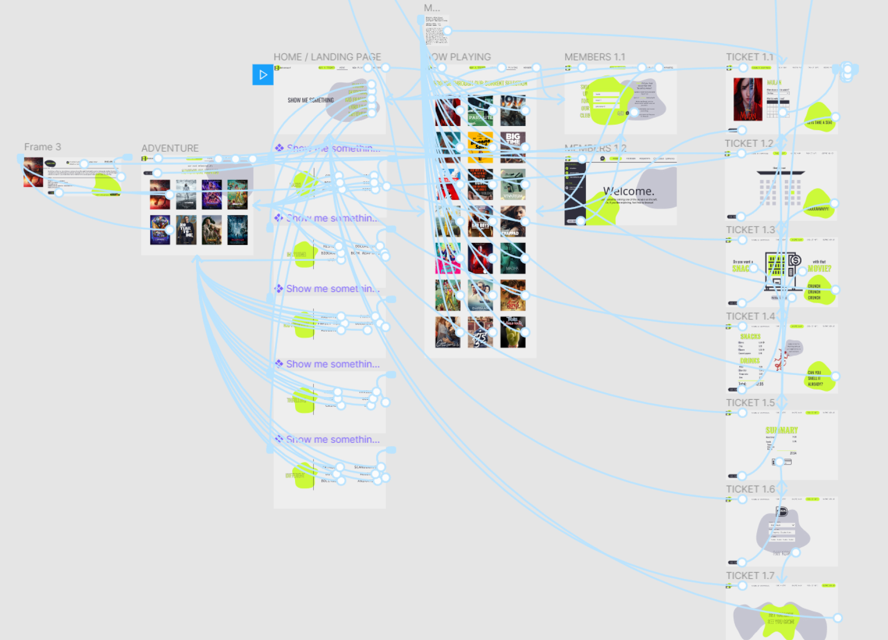

Rethinking the cinema experience
We set off to create a digital platform product for a supposed client, UKCinemas, needing to adapt to the Dutch market as it was just entering it. We conducted research, gathered insights and made our way from finding our client's problems to delivering a product to solve them.
TIMELINE
TEAM
february - april 2020
done with:
THE HAGUE UNIVERSITY
OF APPLIED SCIENCES
Brynja Kristinsdottir @ UI/UX & Research
Smaranda Franciuc @ UI/UX & Research
Adina Gojnea (me) @ UI/UX & Research
Case Description
We received the case description stating the problem we were to solve through our design and introducing the client and its needs. The client was UKCinemas, a fictional client who was to represent a cinema company, very popular in the UK.
The Goal was to help the client have an appropriate approach for the Dutch market and focus on their audience needs when designing the website of the digital platform.
A thorough process
We went through a complex process ranging from research methods on users to understand what makes sense for them, visualizing and interpreting data, to wireframing, prototyping and testing our design. The concept contains multiple features such as member space and ticket buying process and makes up for an entire cinema experience for the user, brought digitally.
Target audience
Our audience was in the 20-25 year range and the fresh design colors were aimed at being relevant to their culture. The genres categories proposed by our design are based on the taxonomy exercises we conducted with the users and are focused on a nonconventional approach that helps users decide better what movies interest them.
Technical side and methods
The end product wouldn't have been possible without the technical approach behind it. That included methods like formulating "How Might We?" questions, 6-3-5 canvases, user stories visualizations and use cases. The entire experience was aimed at being a narrative for the user to go through and replicating physical cinema experiences in the digital space was of great importance. We took factors such as sounds, visuals and senses implicated in the physical process and embedded them into the concept.
Inside the team
The whole collaboration was conducted remotely online using collaboration tools like Figma and Google Docs to ensure efficiency. We all assumed the same roles, but divided tasks based on what each member was best at, using the design agency system.

FINAL PRODUCT
Take a look behind the curtain of the final product we delivered.
Next project »
Rijksmuseum User Trial